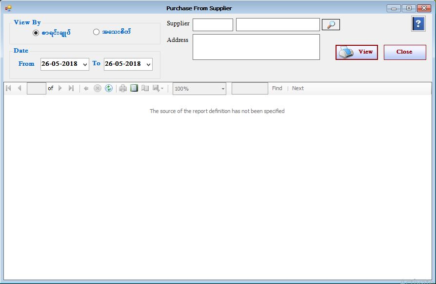

Purchase Stock Item Report Setup

- Reports အောက်ရှိ Purchase From Supplier Report ကိုဖွင့်ပါ။
- Purchase From Supplier Report သည်Supplier တစ်ဦးဆီကို ရွေးချယ်ပြီး ပစ္စည်းအဝယ်စာရင်းများကို စာရင်းချုပ်၊အသေးစိတ် ကြည့်ရှုနိုင်သော Form ဖြစ်သည်။
- Purchase From Supplier Report အား အသုံးပြုပြီးပါက Close Button ကိုနှိပ်၍ ပိတ်နိုင်ပါသည်။